Secondary Education · Jeddah
Science · Arabic curriculum
I am a family-oriented Bangladeshi groom, born and raised in Jeddah, who values faith, kindness, education, responsibility and a peaceful life built together.
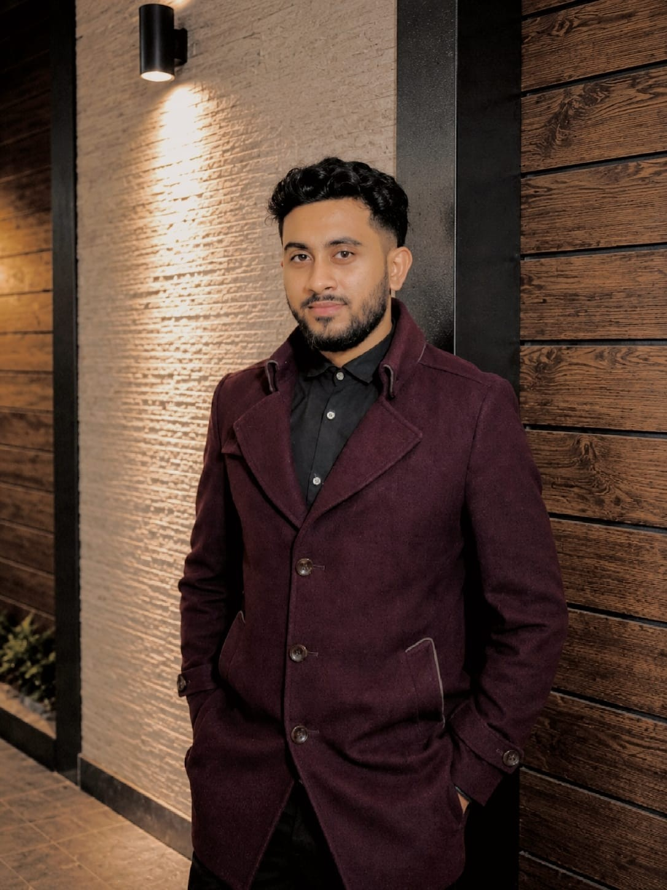
My name is Osama. I may appear quiet at first, and I usually take a little time before I become completely comfortable with someone.
Once I am comfortable, a more talkative and playful side comes out. I enjoy laughing, sharing random thoughts, travelling, photography, food, games and making ordinary moments memorable.
I am caring and sensitive, and I value emotional understanding. I try not to hold on to anger for long; I would rather communicate, understand, forgive and move forward.
For me, a good marriage is not about finding a perfect person. It is about two imperfect people choosing honesty, respect and kindness every day.
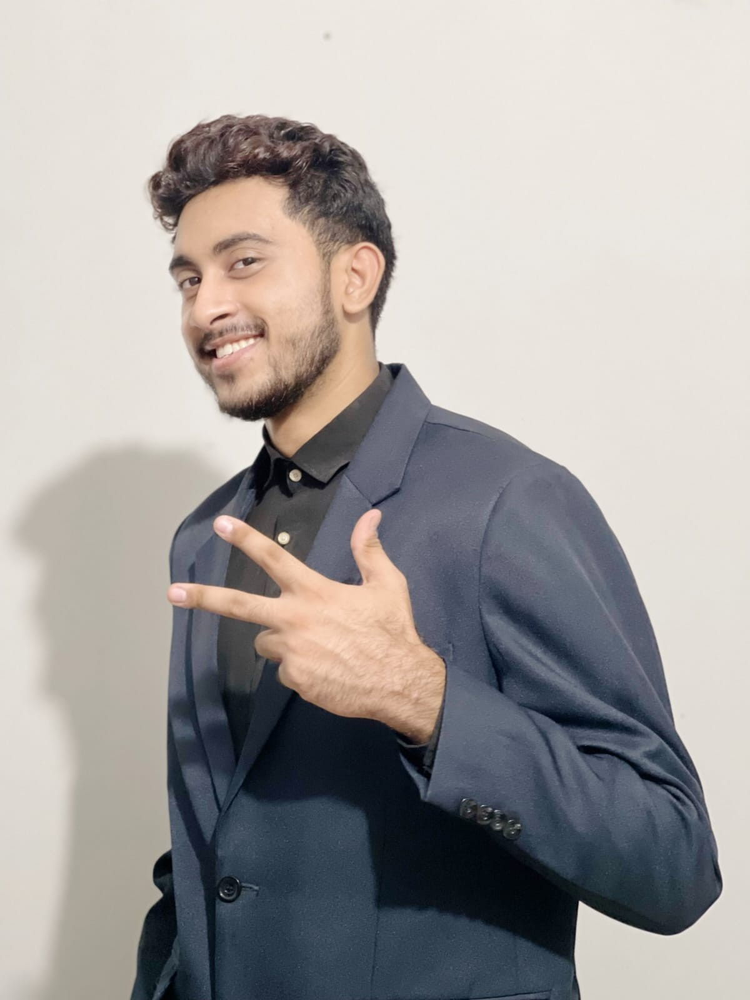
Exact residential addresses and private contact information are intentionally not displayed publicly. Fuller family and contact details can be shared privately when there is genuine matrimonial interest.
I was born and raised in Jeddah, Saudi Arabia. Growing up in the Middle East shaped parts of my personality, outlook and way of seeing people and life.
I completed my school education in Jeddah through the Arabic curriculum, then completed my undergraduate journey in 2026 with a Bachelor of Science in Business Administration from the University of the People.
My education journey taught me independence, patience and responsibility. The change from science to arts/humanities in secondary education was part of my school journey, not a gap in education.
Science · Arabic curriculum
Arts / Humanities · Arabic curriculum
BSc Business Administration · Completed 2026
I come from a middle-class Bangladeshi family. We value family, education, faith and supporting one another more than showing status or luxury.
My father works as a supervisor in Saudi Arabia, and my mother is a homemaker. I have one elder sister and one younger brother.
I am the eldest son, so responsibility toward family has naturally been an important part of my life. I try to be dependable and to think seriously about the future.
Works in Saudi Arabia.
Dedicated to our home and family.
Currently working as an Assistant Teacher; studied English Language and Literature at International Islamic University Chittagong.
Currently continuing his education.
Full names, exact school details, private phone numbers and unnecessary identifying information are not published publicly. Fuller family information can be shared privately between families when there is genuine matrimonial interest.
I may not fill every silence. I like observing, understanding and slowly becoming comfortable.
When someone becomes important to me, their happiness and difficulties matter to me.
I can be sensitive, but I prefer understanding, honest conversation and forgiveness over prolonged anger.
Anime, games, photography, travel, food and random fun are part of me too.
I take family and my future seriously while accepting that growth is a lifelong process.
A home where two people can be honest, happy, tired, emotional and still feel respected and supported.
Faith. Islam is an important part of my life. I hope marriage helps both people grow in faith and character.
Kindness. I notice how someone treats people, especially when there is nothing to gain from being kind.
Honesty. I would rather hear an uncomfortable truth than live inside a comfortable lie.
Understanding. People are not always at their best. I want both people to be able to explain what they feel and be heard.
Peace. I don't want every disagreement to become a battle. I want two people who can calm each other down and find their way back to each other.
I believe a marriage should slowly become a place where two people can speak honestly without fear of being judged.
If one of us is having a difficult day, the other does not always need to solve everything. Sometimes listening, patience and simply staying beside each other are enough.
I want to give that same understanding and support in return.
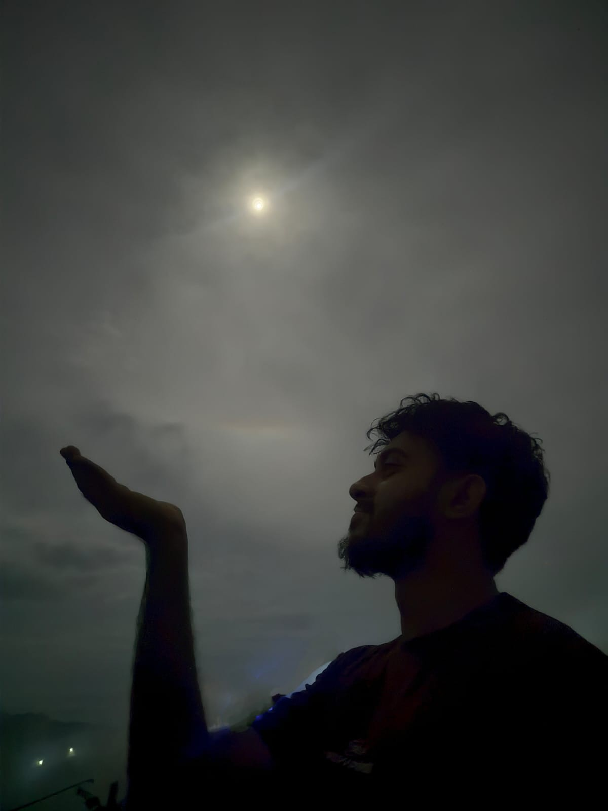
I love travelling, mountains, waterfalls, rivers, green landscapes and rainy weather. I enjoy photography, exploring new places, anime, games and trying different food.
Smiling, relaxed, dressed up, traditional and candid moments — the photographs that show different sides of me.
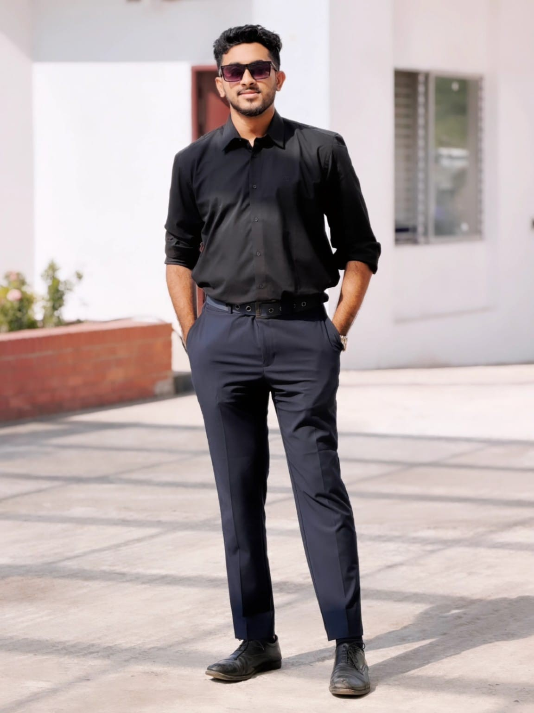
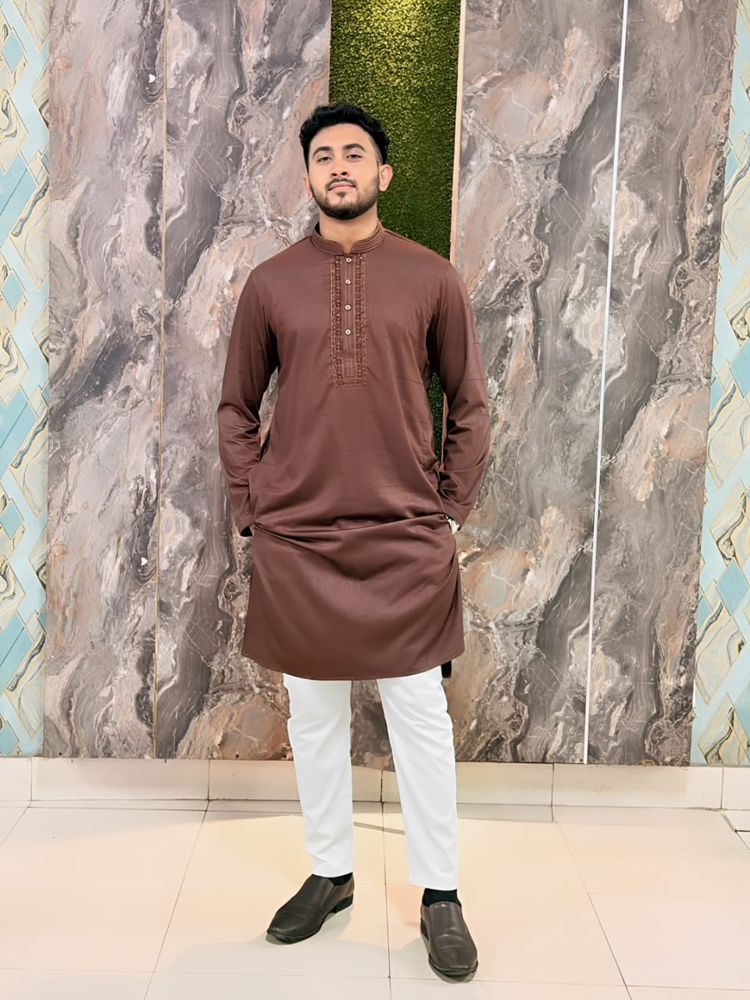
Green hills, water, sea air, waterfalls and open skies — the places I naturally gravitate toward.
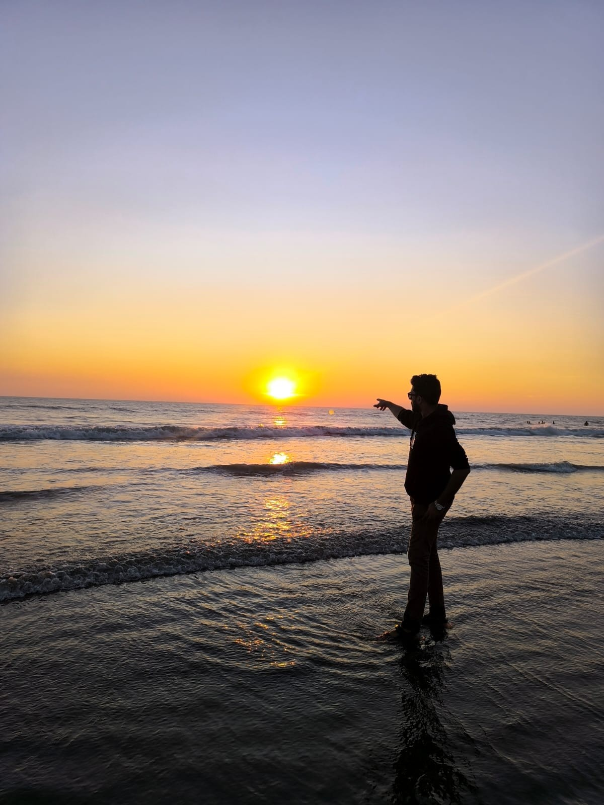
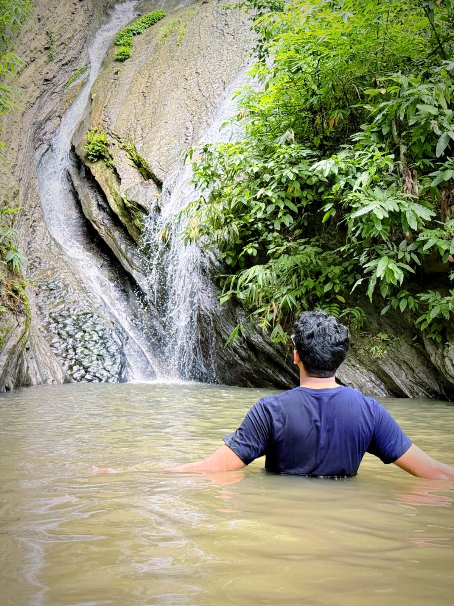
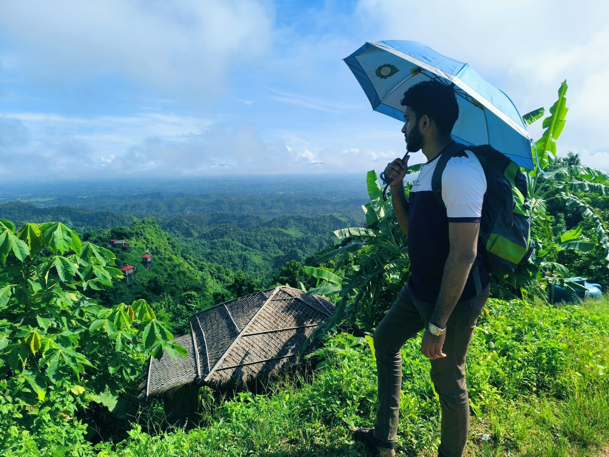
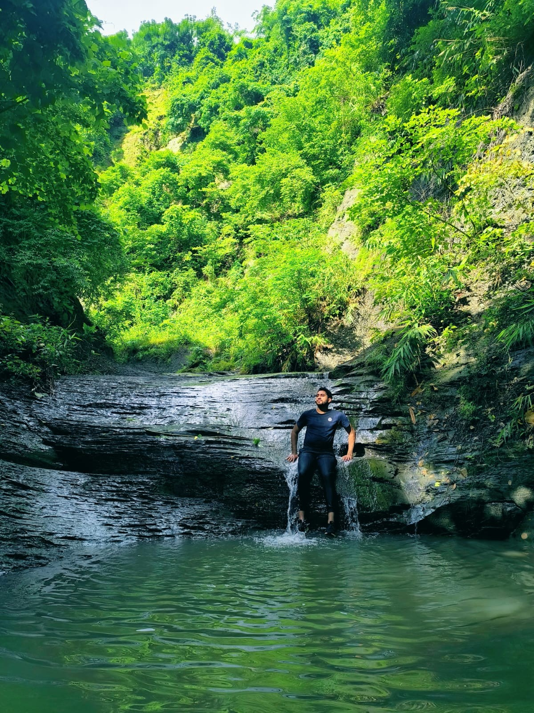
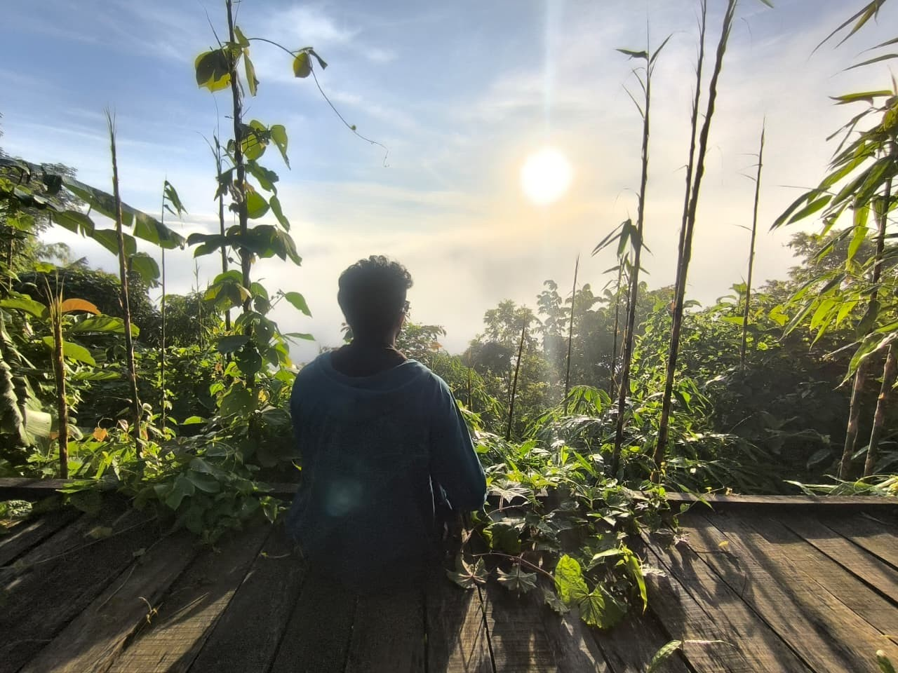
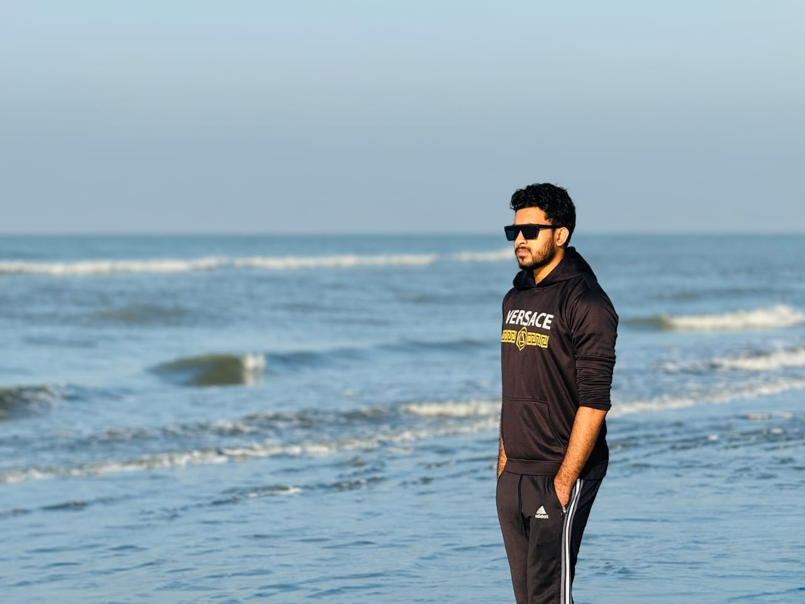
Some photographs are less about showing a face and more about capturing a feeling.
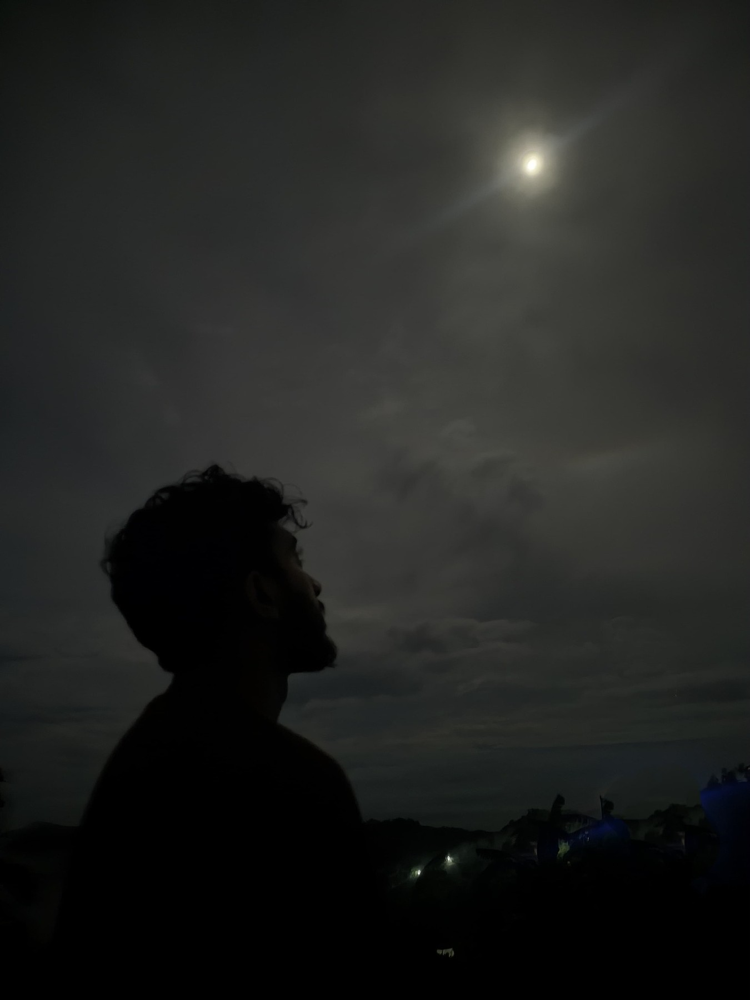
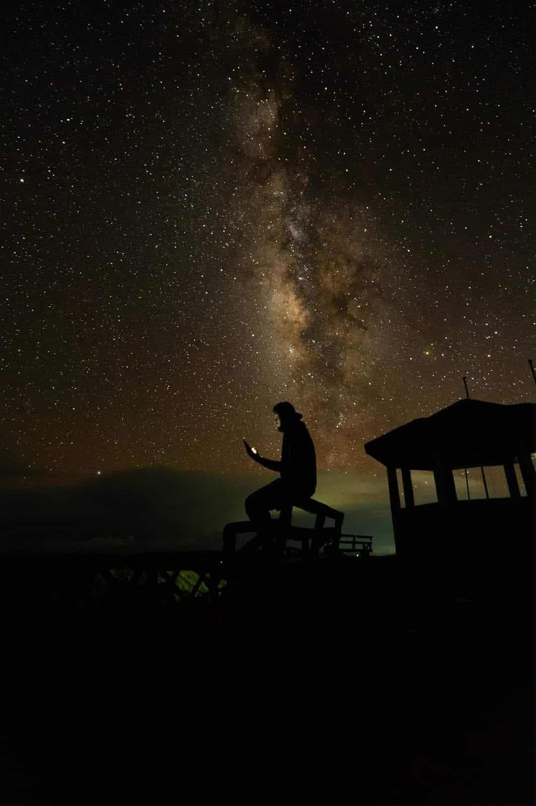
I currently work as a Student Affairs Officer at Al-Hidaayah International School, Chattogram.
My work involves administration and student affairs, including admissions, student and parent support, records, ERP systems, documentation and coordination with different departments. It has helped me become more organized, responsible and comfortable handling people and day-to-day responsibilities.
Current status: Employed and actively building my professional career.
I have completed my undergraduate degree and I am currently building my career and financial stability step by step.
One of my goals is to pursue a master's degree overseas if the right opportunity becomes possible. I also want to keep learning, work hard, experience different cultures and continue travelling.
I do not expect life to be perfect from the beginning. I value steady progress, responsible decisions and building a secure future over trying to appear as though everything is already complete.
I take emotional connection seriously. Because of past experiences, trust is something I prefer to build gradually rather than assume instantly.
I am not looking for someone who wants to use a relationship only for passing time or convenience. I want something genuine — two people who respect each other's boundaries, communicate honestly and build trust with time.
I believe both people should be able to speak openly about their expectations, past experiences and future plans without unnecessary judgement.
I don't have a long list of demands. Age and height are not things I want to make the centre of a marriage. Compatibility, character and mutual understanding matter much more.
I hope to meet someone simple — someone who does not need an extravagant lifestyle to be happy and who believes a peaceful life can be beautiful.
I would like her to be caring, kind, well-mannered, family-oriented and religious-minded. I value emotional maturity and a calm personality.
If she wants to study further, work, build a career or follow a dream, I would support that. I don't want marriage to make her world smaller.
If she dreams of studying or living abroad someday, I would be happy to understand that dream and work toward it together.
Someone kind when nobody is watching.
Someone who can listen, communicate and understand feelings.
Someone who doesn't measure happiness only by status or luxury.
Someone who values Islam and wants to grow together.
Someone whose education and ambitions I can support.
Someone who believes marriage is a partnership through both ease and difficulty.
I want a best friend, a companion and a person with whom I can slowly build a home.
I want the kind of marriage where we can laugh about something silly one evening, worry about a problem together another day, celebrate a small achievement, disagree sometimes, say sorry, forgive and still choose each other.
I don't expect either of us to be strong every day. There will be days when she needs me more and days when I need her more.
I hope we can understand that this is not weakness. This is what being partners means to me.
Not only when everything is beautiful, but when one of us is tired, worried or struggling.
Support education, work, dreams and personal growth.
Travel, eat new food, explore places and enjoy ordinary days.
We don't need to start with everything. We can build slowly and responsibly.
If life allows, I would even love to build a small business or project together someday — something that grows because both of us cared about it.
I come from a middle-class family. I have completed my undergraduate degree, I am employed, and I am continuing to build my career, financial stability and future.
I don't want to hide behind impressive words or pretend that everything is already complete. I would rather be honest about where I am and responsible about where I am going.
What I do have is the willingness to work, learn, grow, take responsibility and keep moving forward.
I hope to meet a woman with a good heart and a simple way of looking at life — someone who can see the person I am today and also believe in the person I am working to become.
Maybe we won't have everything at the beginning.
Maybe we can build it together.
Further family information and direct contact can be shared privately between families.